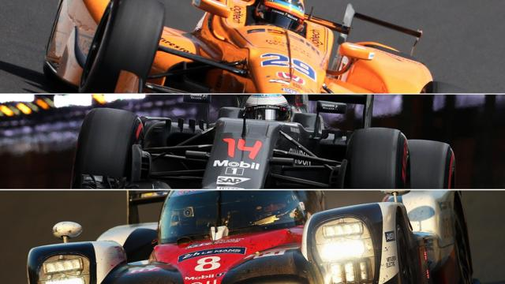
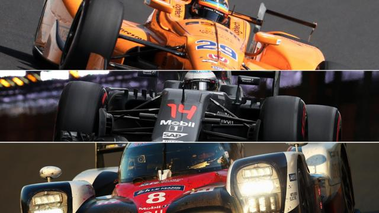

La Triple Corona
La Triple Corona en el mundo del automovilismo es un logro no reconocido ofialmente y que hasta la fecha solo ha logrado un piloto hasta el fecha.

La Triple Corona en el mundo del automovilismo es un logro no reconocido ofialmente y que hasta la fecha solo ha logrado un piloto hasta el fecha.
Nos remontamos a 1994 cuando el GP de Australia era el último de la temporada y se corria en Adelaide, en lugar del actual Albert Park de Melbourne.
Un final de carrera con lluvia y niebla sobre el asfalto de Fuji. El final de la temporada de 1976 en el Gran Premio de Japon.

La historia del brasileño Ayrton Senna en su paso por la Formula 1.